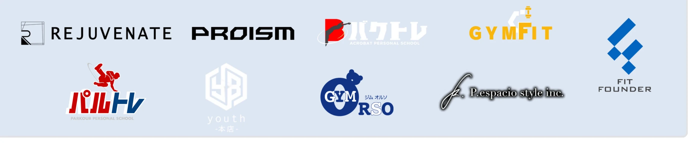

TIKTOK × 集客
アクロバット教室
半年で売上1.5倍
- 1か月目から総再生50万回突破
- フォロワー 1,400人 → 12,000人
フィットネスに強い。全業種に対応。
YouTube・ショートの制作から、
問い合わせにつながる導線づくりまで。
動画ごとの専用リンク経由の問い合わせ件数を、
毎月ご報告します。
総合ディレクター アクトレブログ 総フォロワー100万人
ご相談だけで終わっても
費用はかかりません。
総合ディレクター アクトレブログ 総フォロワー100万人
動画 → 導線設計 → 問い合わせ。企画・撮影・編集、投稿・コメント返信、問い合わせにつながる導線づくり、毎月の件数表
企画・撮影・編集に加え、問い合わせ導線の設定・計測、毎月の報告まで。
成果につながる基本設計を、通常プランに含めています。
動画から、Web・LINEなどを通じた問い合わせまで。
成果が見える導線づくりを支援します。
広告費・LINE公式アカウントの月額は別途。制作本数・内容に応じてお見積もりします。料金と条件を見る →
横にスクロールできます
フィットネス・身体分野の経験を軸に、さまざまな業種を支援しています。
TIKTOK × 集客
半年で売上1.5倍
YOUTUBE SHORTS × 認知
2本目の投稿で80万回再生
TIKTOK × YOUTUBE
運用3か月でYouTube収益化
ジム・体操教室などの制作実績から、他業種の事例まで。
横にスクロールできます
横にスクロールできます
横型YouTubeに加え、ショート動画の企画・制作にも対応。目的に合わせた運用内容をご提案します。

アクトレブログ
最初の2秒と構成の確認
月1回の企画レビュー
企画・映像制作の監修
ジム・体操教室・整体・ダンスなど身体系の業種
四半期に1回、月2社まで
撮影同行・出演・本人アカウントで告知
通常は店長・スタッフの出演を前提に、負担の少ない企画から始めます。
通常プランに含まれること
必要な制作本数・内容に合わせてお見積もりします。
成果報酬の対象と1件の単価は、契約時に決定します。
| 制作単価 （企画・撮影・編集込み） | 1本あたり |
|---|---|
| 横型ロング動画 | 4万円〜 |
| ショート動画 | 2万円〜 |
| 広告用の短い動画（撮影素材から制作） | 3万円〜 |
| 計測・広告の運用手数料（LINEの自動案内を含む） | 月額0円 |
| 初期費用（導線の設定・計測の準備） | 0円 |
16万円〜 / 月
成果報酬の上限32万円（制作費の200%）。
制作費＋成果報酬の合計最大48万円／月最低制作単価で計算した例です。
税別。広告費・LINE公式アカウントの月額料金（利用時）は別途。
32万円〜 / 月
成果報酬の上限64万円（制作費の200%）。
制作費＋成果報酬の合計最大96万円／月最低制作単価で計算した例です。
税別。広告費・LINE公式アカウントの月額料金（利用時）は別途。
価格は税別。上記の料金例は最低制作単価で計算しています。実際の制作費と成果報酬の上限は、月の投稿本数やコンテンツ内容によって変動します。広告費は実費（月3万円程度から・御社の広告口座）、LINEを利用する場合、公式アカウントの月額は別途。詳しくはお問い合わせください。
自社で制作したい方へ: 内製化サポートもあり
成果報酬=件数×1件の単価上限: 制作費の200%
契約時に決めた成果（例: 体験予約、見積依頼、相談）が動画のリンク経由で発生した件数に、契約で決めた1件の単価を掛けた金額です。上限はその月の制作費の200%（2倍）で、超えた分は請求しません。上記の最低制作単価の例では、例1は上限32万円（1件5,000円なら64件分）、例2は上限64万円（128件分）です。
目的と現状を確認
運用内容と金額をご提示。ここまで無料
成果として数える条件を書面で確認
アカウント、問い合わせ導線、台本を準備
撮影は月1〜2回。編集後に投稿開始
運用開始30日目に、
動画ごとの問い合わせ件数表（専用リンク経由）をお渡しします。
オンライン30分。動画がまだ無い会社もご相談ください。
ご相談だけで終わっても費用はかかりません。
1営業日以内にご返信します。